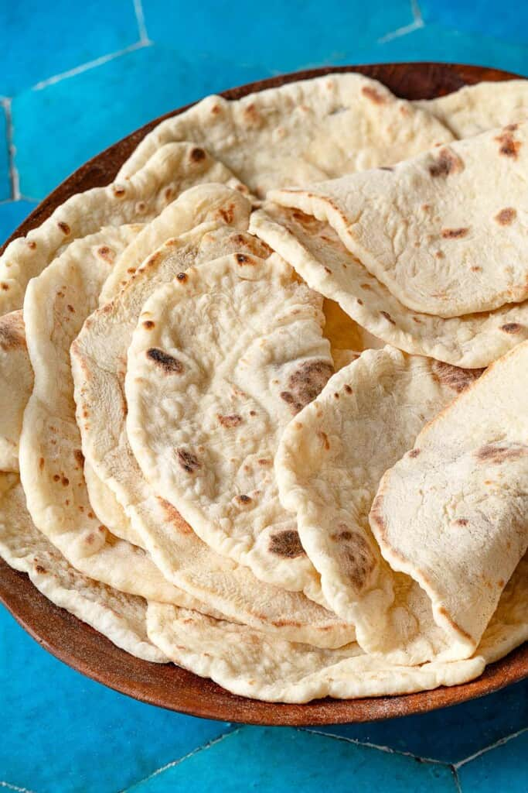

Lavash

Lavash is a soft, paper-thin flatbread. Much like pita, this ancient flatbread is a beloved staple of Armenian and Middle Eastern cuisine that is easy to make at home with pantry ingredients you likely have on hand. This lavash recipe will teach you how to make lavash any night of the week using a skillet!
Here is the ingredients to prepare the lavash
- 2 ½ cups bread flour, plus more for dusting
- 1 teaspoon instant yeast
- 1 teaspoon kosher salt
- ⅔ cup warm water
The process of cooking
- Mix the dough.Into a large mixing bowl, add the flour, yeast, and salt. Mix with a wooden spoon as you slowly add the water, milk, and honey.
- Knead the dough.When the dough becomes too difficult to mix with the spoon, turn the dough over onto a clean, lightly floured surface. Lightly oil your hands with about ½ teaspoon of olive oil and gently knead just until the dough comes together (it will be sticky), about 3 minutes or so.
- Set aside to rise.Wipe the mixing bowl clean or rinse and dry it very well. Lightly oil the bottom and sides of the bowl with about 1 teaspoon olive oil. Place the dough in the bowl and oil the dough with about ½ teaspoon olive oil. Cover the bowl with a clean kitchen towel and set it aside in a warm spot for about 45 minutes.
- Divide the dough.Use oiled fingers to gently punch the dough down, then divide it into 12 small balls of equal size. (It helps to weigh the dough balls. Mine weighed around 1 ½ ounces each.)